Bacon Q Dog

Bacon Q. Dog is a 9yr old labradoodle. He prefers to spend his days lounging among the three different beds/couches that his family has gifted him. He enjoys a walk or two around the neighborhood, as long as he can pretend that he doesn't see any of the other animals to avoid the embarrassment of not wanting to admit he has no wolf-like skills in chasing them.
At night just as the rest of the family is ready to relax, Bacon suddenly wants to release all of his energy. He will place his toys on a mini couch and frantically drag the couch around, giving his toys "a ride." There is also a lot of rolling. Lots and lots of rolling.
Photo Gallery


Likes
- Belly rubs
- Playing tug-of-war
- Sneaking onto the couch
Ash the Hallway Cat
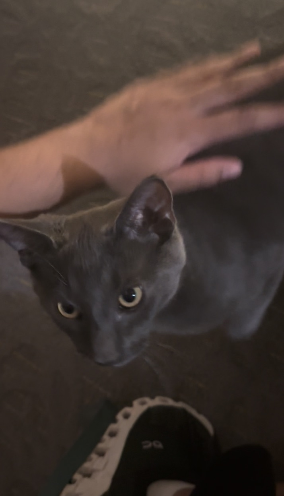Ash is a black cat that roams my apartment hallways. He's somehow always ready to greet me or my roommate and likes to run down the stairs to say Hi.
If we're not fast enough, he will run into our apartment and hide somewhere. Ash won cutest pet for our apartments, and I'm inclined to agree.
Photo Gallery
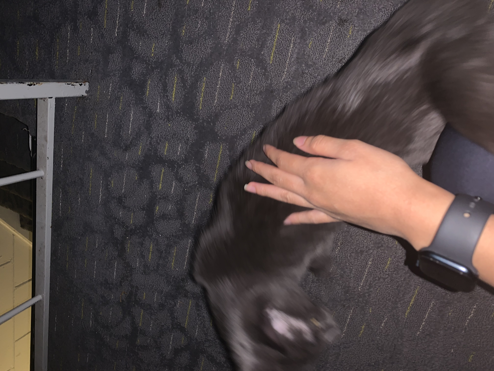Likes
- Stairs
- Exploring
- Sneaking into my apartment
Earl
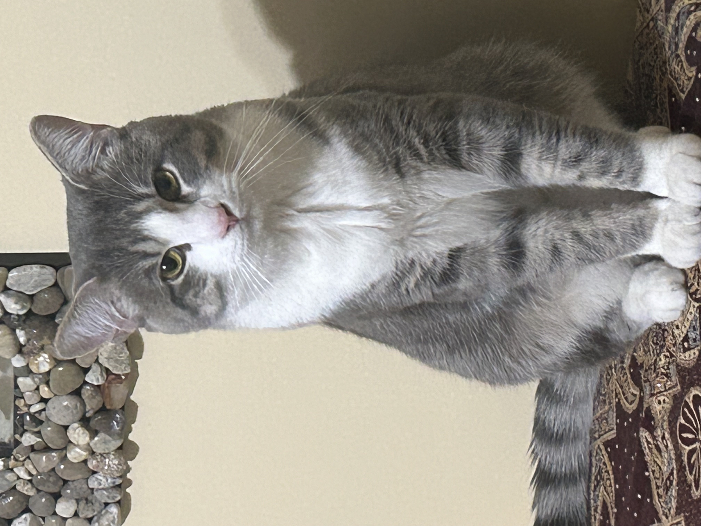Earl is a gray cat who loves playing hide and seek! He is very friendly but does not enjoy being picked up! You can find Earl hiding behind a corner, or trying to knock things off the mantle.
Photo Gallery
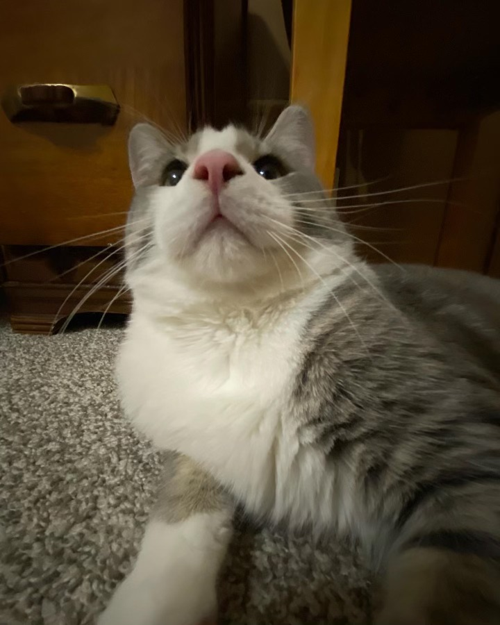 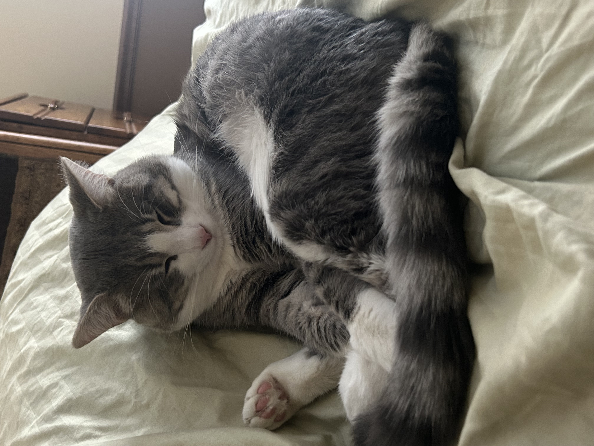 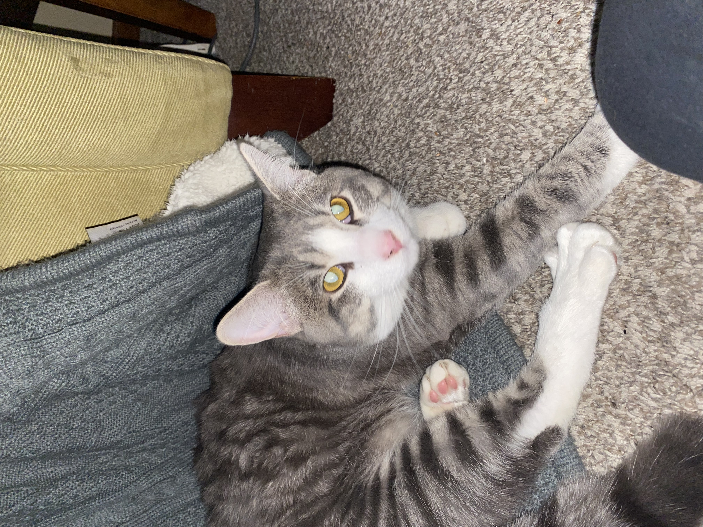Likes
- Hide and Seek
- Knocking things off the mantle
- Being pet
Astrid
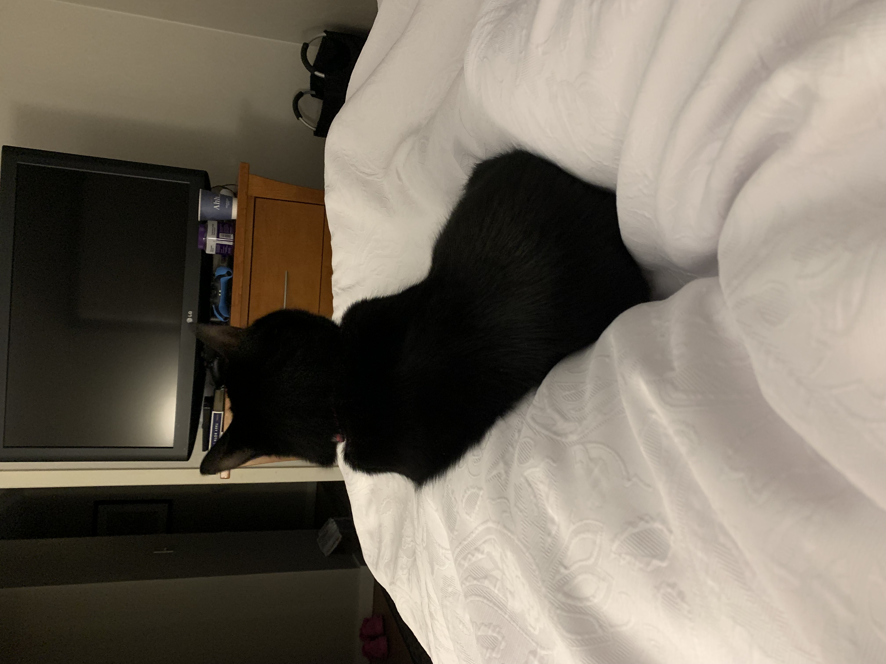Astrid is a black cat who enjoys hiding and playing with others.
Photo Gallery
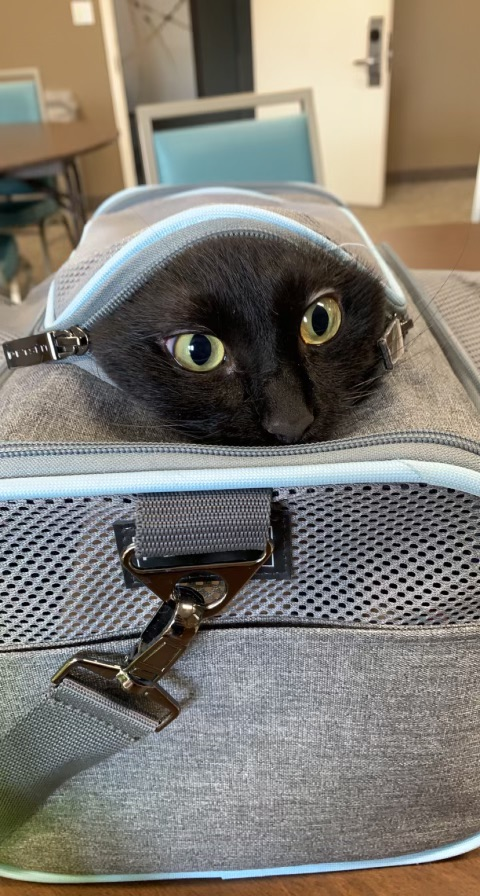 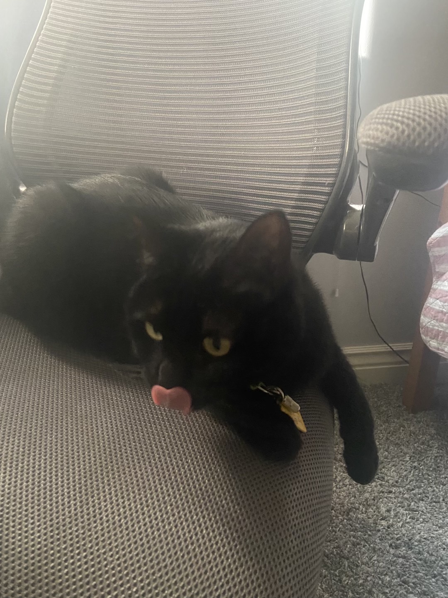 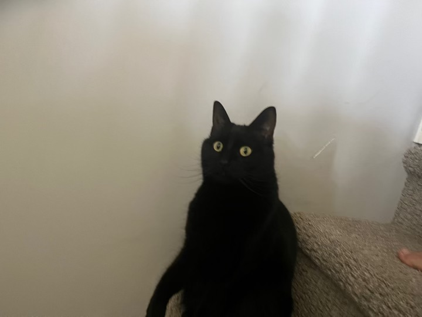 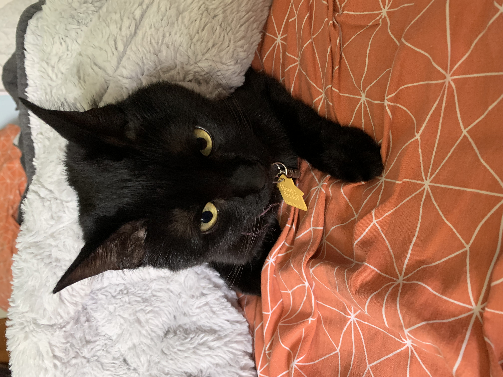Likes
- June, her owner
- Food
- Hiding
Maui
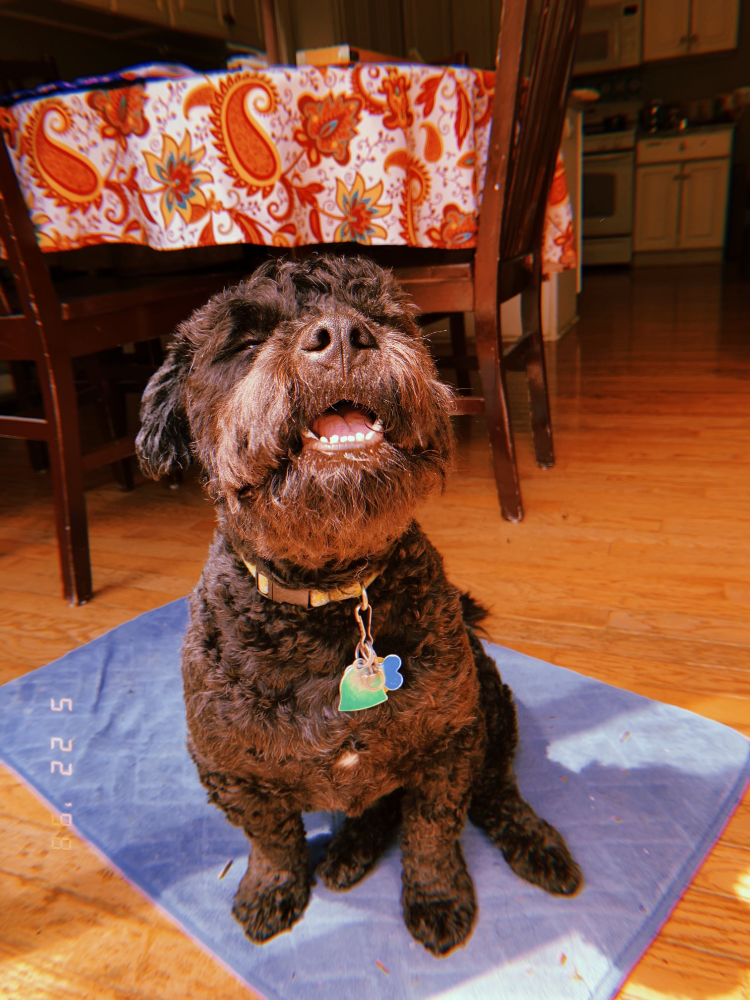Maui is a energetic black dog that frequently steals shoes to prevent people from leaving. He loves jumping on people and doesn't care for excercise all that much. He loves his family and will lick your face.
Photo Gallery
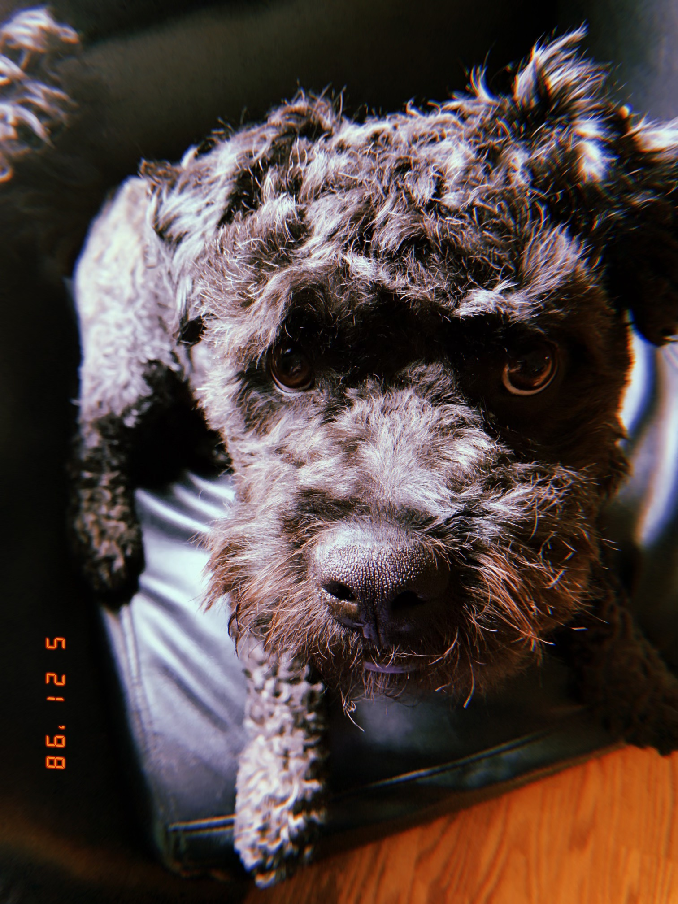 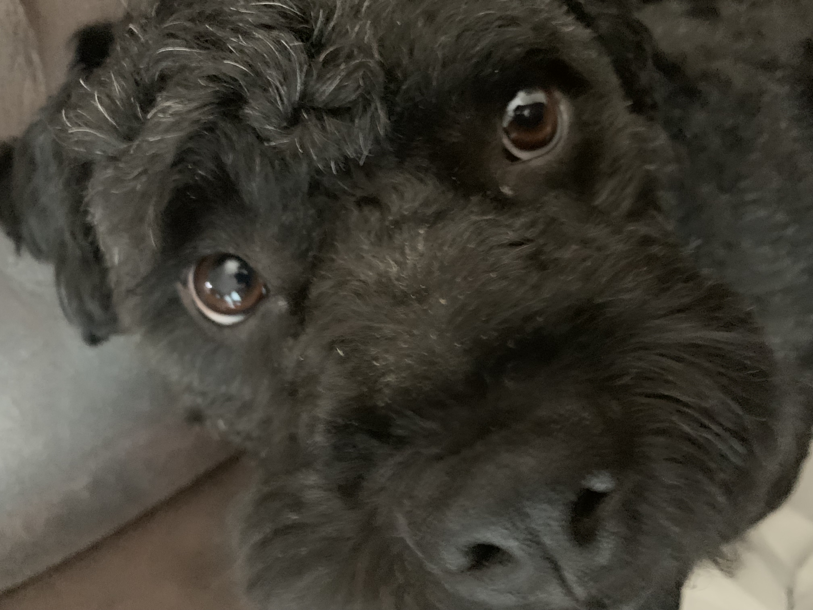 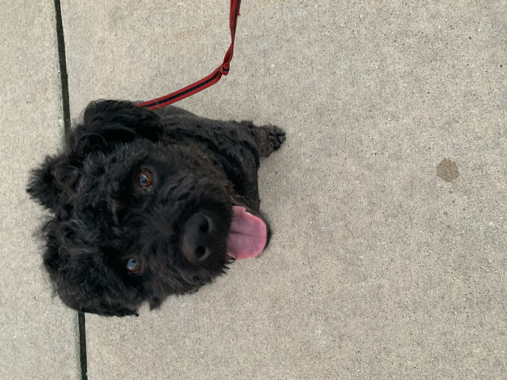Likes
- Belly rubs
- Stealing shoes
- Attacking friends with licks
Milo
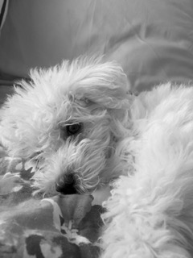Milo is a high maintenance, lazy dog who prefers lounging over running. His favorite food to eat is Indian food, and he loves anything with chicken in it. He especially loves chicken, but it must be marinated and seasoned.
Photo Gallery


Likes
- Chicken (from biryani)
- Sleeping
- Eating